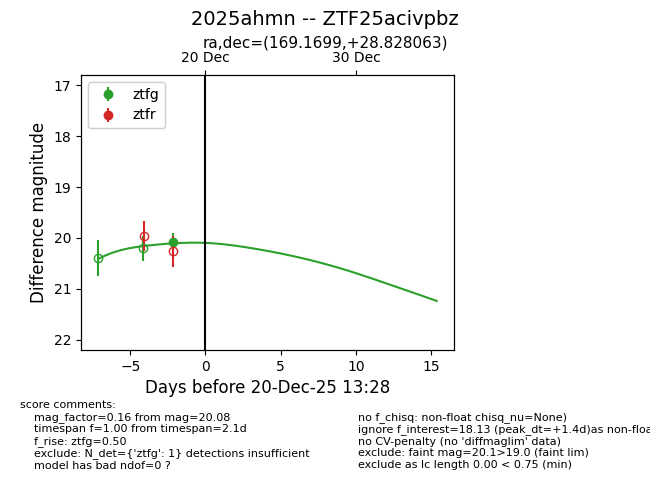
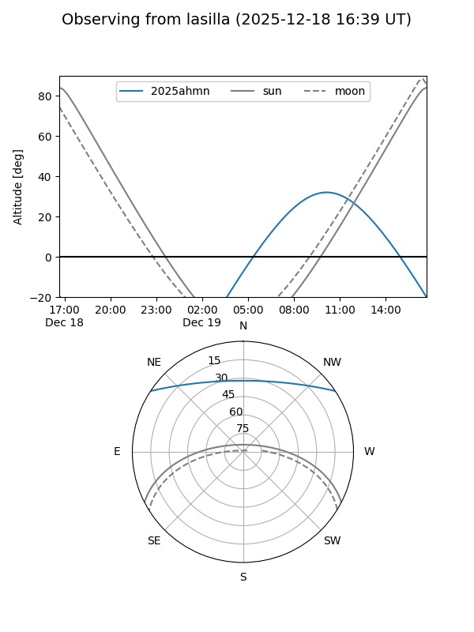
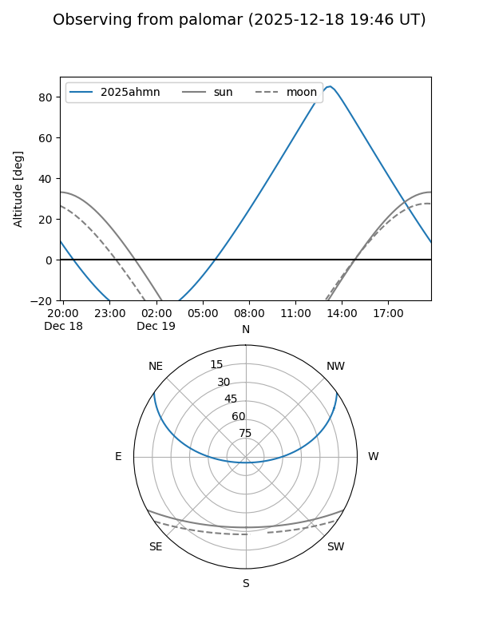
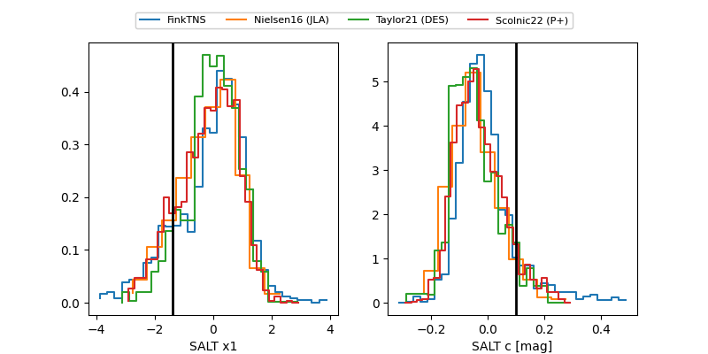

2025ahmn
Target 2025ahmn at 2025-12-20 14:54
Aliases and brokers:
FINK: fink-portal.org/ZTF25acivpbz
Lasair: lasair-ztf.lsst.ac.uk/objects/ZTF25acivpbz
ALeRCE: alerce.online/object/ZTF25acivpbz
TNS: wis-tns.org/object/2025ahmn
YSE: ziggy.ucolick.org/yse/transient_detail/2025ahmn
alt names
ZTF25acivpbz (ztf,fink_ztf)
2025ahmn (tns,yse)
Coordinates:
equatorial (ra, dec) = 169.1699,+28.82806
equatorial (HMS+DMS) = 11:16:40.77,+28:49:41.03
galactic (l, b) = (202.7333,+69.04466)
Flags:
Photometry:
last ztfg=20.11, ztfr=20.11
2 ztfg, 1 ztfr detections
Lightcurve

Visibility


Additional plots
